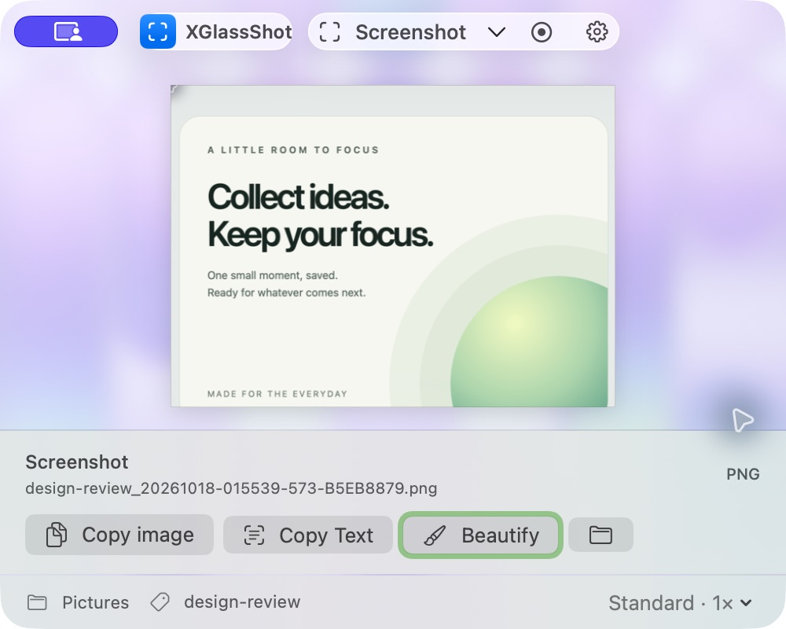

Capture. Save. Keep it local.
XGlassShot is a free, open-source screenshot and recording tool for macOS. Choose your display, save folder and filename prefix. Copy images, extract text or give a screenshot a polished background, all on your Mac.
Browse the source · Mac App Store record: XGlassShot
The free store release has been submitted and is awaiting Apple review. Requires macOS 14.6 or later. No account, advertising, cloud AI, subscription or in-app purchase.

Built for your workflow
- Area capture and video recording on the selected display.
- Flexible folders and safe, custom filename prefixes.
- Local OCR and screenshot beautification.
- Day, Night, custom images and adjustable background transparency.
- A separate JSON CLI for scripts and agents.
Read the quick start or learn how local data is handled.